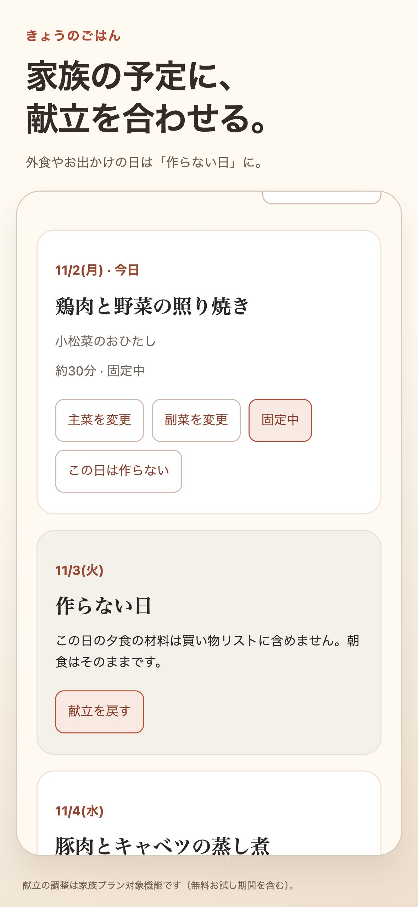
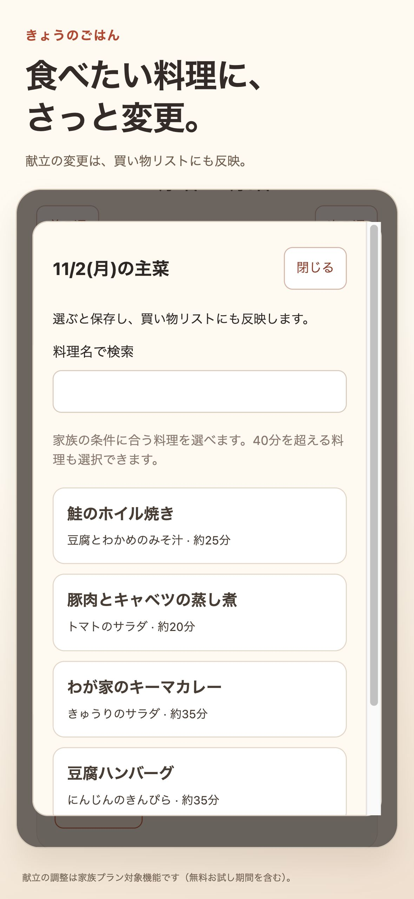
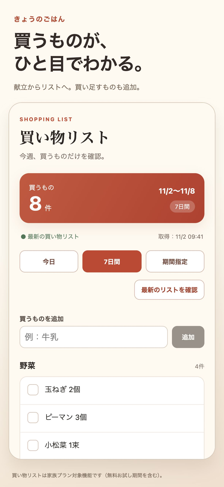
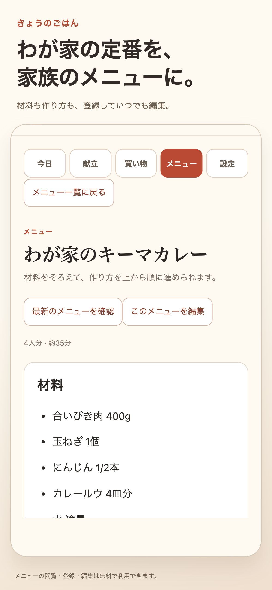
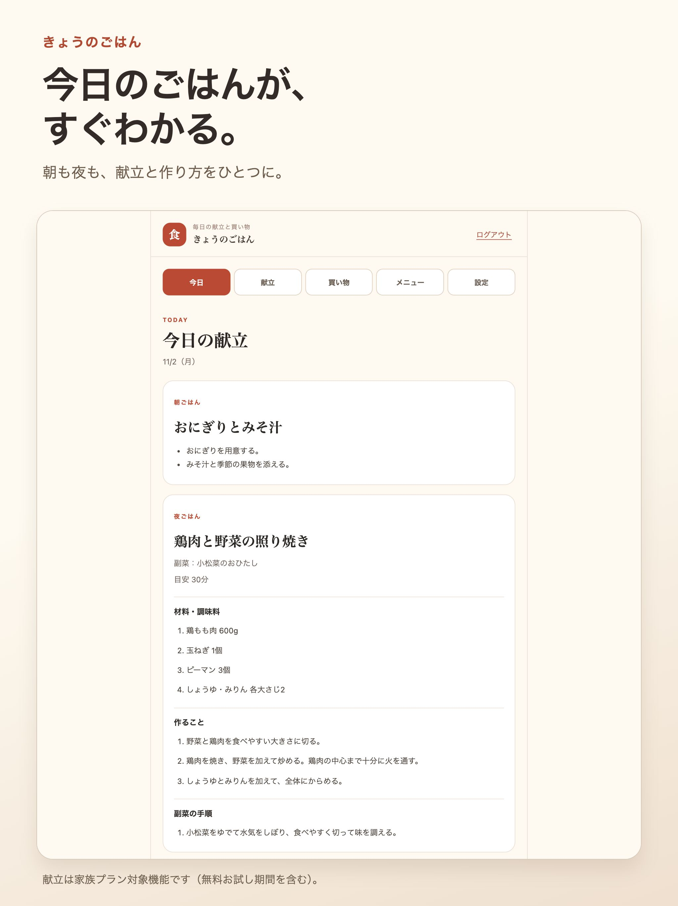
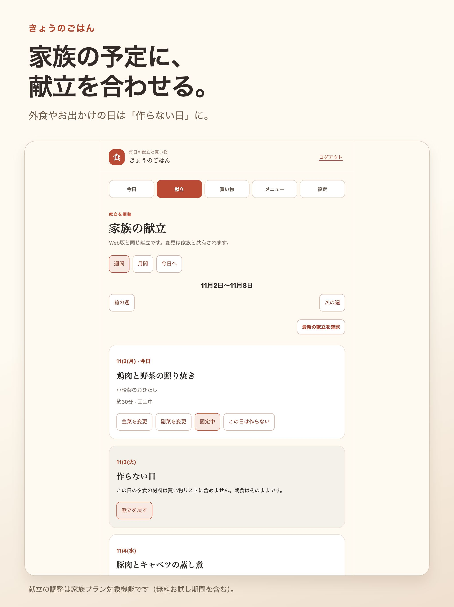
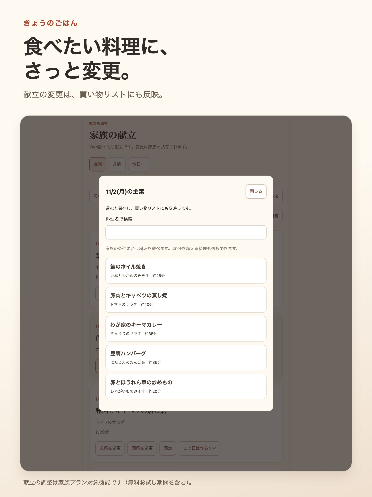
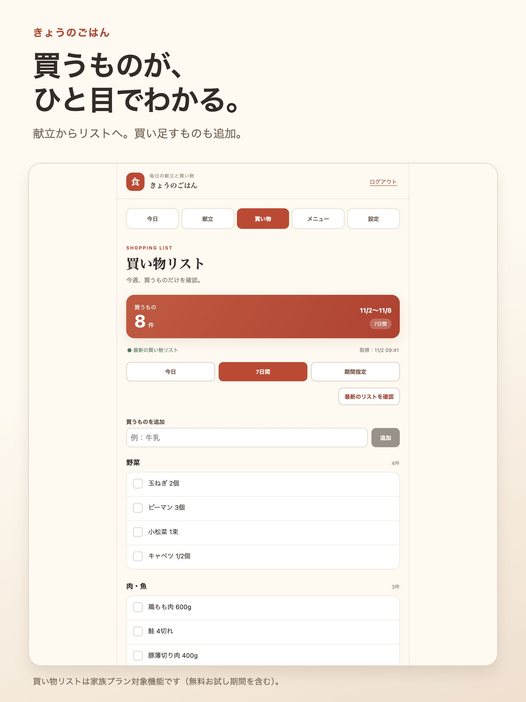
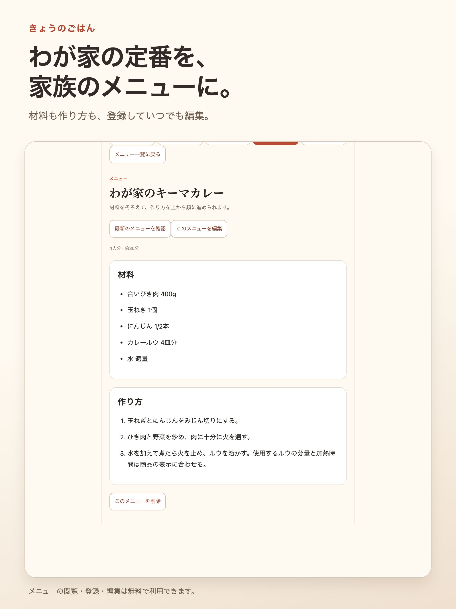

きょうのごはん / App Store掲載準備
献立と買い物を、家族の手のひらに。
掲載画像と説明文の確認ページです。アプリ本体の画面を、架空の家族データで表示しています。
Appleには未登録です。画像はブラウザでの描画で、端末での最終照合前の掲載案です。
iPhone掲載画像案
 今日のごはんが、すぐわかる。
今日のごはんが、すぐわかる。

家族の予定に、献立を合わせる。

食べたい料理に、さっと変更。

買うものが、ひと目でわかる。

わが家の定番を、家族のメニューに。iPad掲載画像案


今日のごはんが、すぐわかる。

家族の予定に、献立を合わせる。

食べたい料理に、さっと変更。

買うものが、ひと目でわかる。

わが家の定番を、家族のメニューに。登録する文面
- 名前
- きょうのごはん｜献立・買い物リスト
- サブタイトル
- 家族の献立と買い物をひとつに
- 紹介文
- 今日のごはんを確認したら、買うものもチェック。予定に合わせた献立の変更や「作らない日」の設定、わが家のメニューの登録も。毎日のごはんの準備を、家族で共有できます。献立・買い物の継続利用と家族招待には家族プランが必要です。
- キーワード
- 献立,買い物リスト,料理,レシピ,家族,夕飯,食事,作り置き,メニュー
説明文
「今日、何を作ろう？」を、家族で考えやすく。
きょうのごはんは、献立と買い物リストをまとめて管理するアプリです。
■ 今日の献立を確認
朝ごはんと夜ごはん、材料や作り方を確認できます。調理の前に、今日の段取りをひとつの画面で。
■ 予定に合わせて献立を調整
週間・月間の献立から、主菜や副菜を変更できます。外食やお出かけの日は「作らない日」に。変更は家族の献立と買い物リストに反映されます。
■ 買うものをまとめてチェック
献立に合わせた買い物リストを確認し、買ったものをチェック。買い足したいものも追加できます。通信できないときは、端末に保存したリストを閲覧できます。編集や最新情報の取得には通信が必要です。
■ わが家のメニューを保存
料理名や材料、作り方を登録・編集して、家族だけのメニューに。登録した料理は献立の変更でも選べます。メニューの閲覧・登録・編集は無料で利用できます。
■ 家族の人数に合わせて
大人・子どもの人数を設定し、献立と買い物の分量計算に使えます。
■ 買い物・仕込みのお知らせ
曜日と時刻を設定して、端末で通知を受け取れます。通知の許可が必要です。
■ 家族プランについて
無料お試し期間の終了後、今日の献立、週間・月間の献立、買い物リストを継続利用するには家族プランが必要です。家族の招待・共有も家族プランに含まれます。
日本での料金は月額480円（1か月）または年額4,800円（1年間）です。購入前にAppleの購入確認画面をご確認ください。
自動更新の定期購入です。支払いはApple Accountに請求されます。期間終了の24時間前までに解約しない限り更新されます。購入後の変更・解約はAppleのサブスクリプション管理から行えます。購入の復元はアプリの「設定」から行えます。アカウントの削除だけでは定期購入は解約されません。
サポート：https://kondate-bay.vercel.app/support
利用規約：https://kondate-bay.vercel.app/terms
プライバシーポリシー：https://kondate-bay.vercel.app/privacy
Appleの標準使用許諾契約：https://www.apple.com/legal/internet-services/itunes/dev/stdeula/